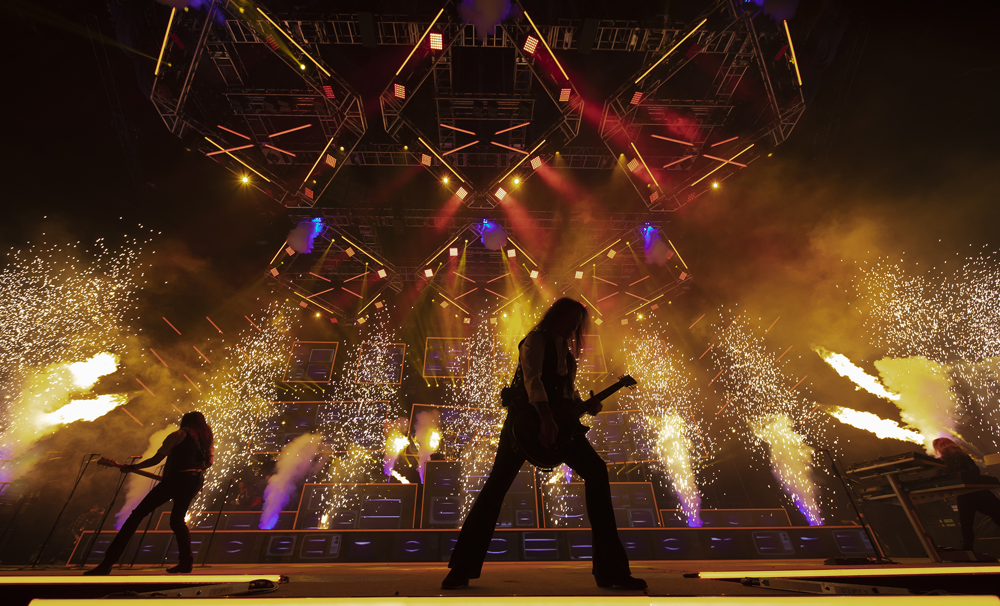
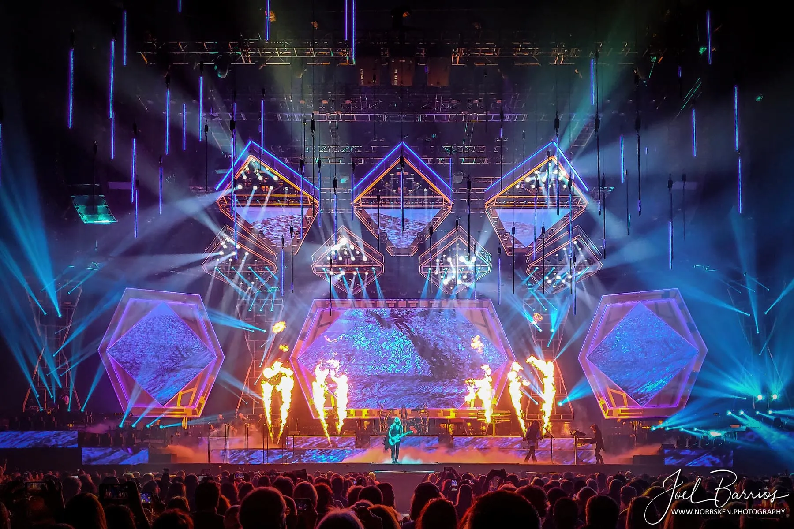
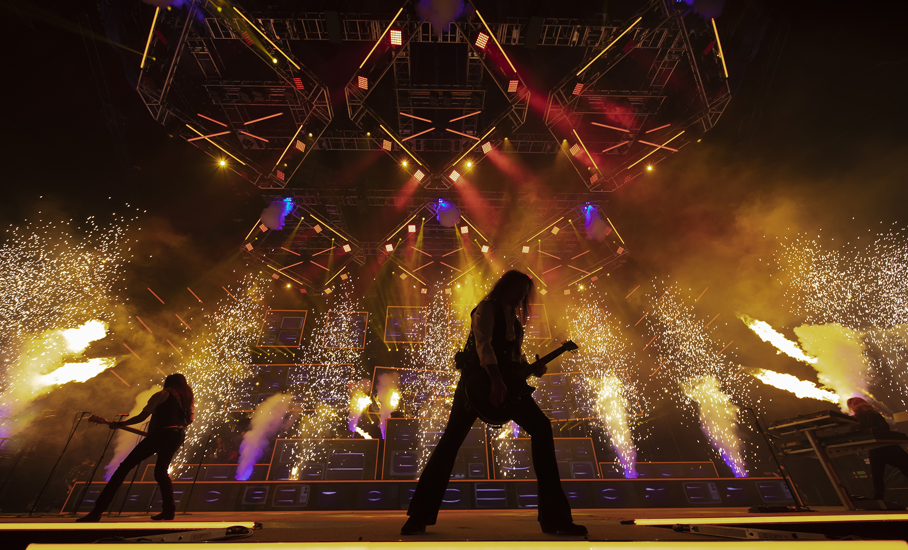
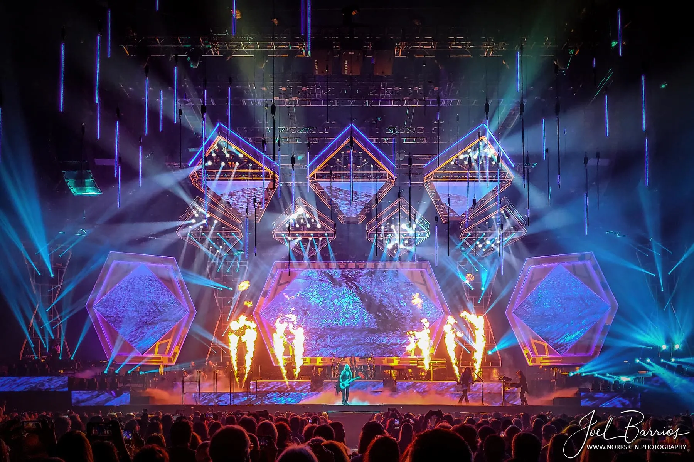

The grandMA3 lighting console is most often operated by professional lighting designers and programmers for large artists, world tours, and major live events — not the artists themselves. Its reliability, flexibility, and powerful programming features have made it an industry standard in live production.
Lighting director Matt Jones and programmer Alex Passmore used a grandMA3 system on the Mathematics Tour (+ – = ÷ ×).
Known for one of the most complex lighting and pyrotechnic displays in touring history, TSO utilizes the grandMA3's advanced networking to sync massive truss movements and laser arrays with their signature rock-opera performance.
 



Kendrick Lamar, SZA, Samuel L. Jackson, and Mustard’s halftime performance was controlled using a grandMA3 lighting system.
Illenium’s Trilogy concert series relied on grandMA3 to drive lighting and visuals across massive multi-night productions.
Events such as Pol’and’Rock Festival, Singapore National Day Parade, Global Citizen NYC, and the Rock & Roll Hall of Fame Ceremony rely on grandMA3 for precise, multi-stage lighting control.
In addition to concerts and tours, grandMA3 is a preferred system for large broadcast productions such as the Super Bowl Halftime Show and the Eurovision Song Contest, where precise, synchronized lighting control is critical.